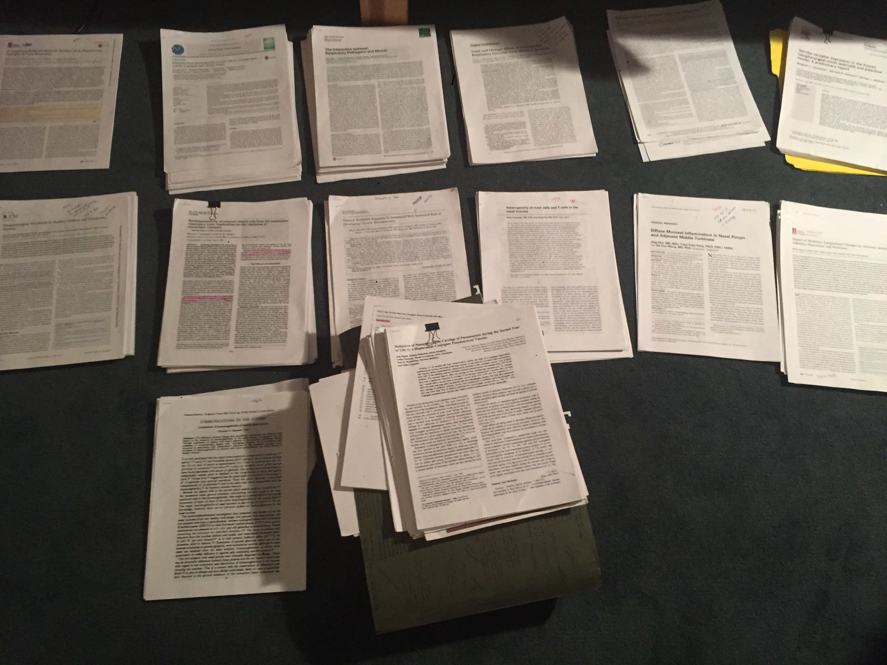

2025
-
Proctor DM, Abraham R, Righi SE. From novice to expert:
preparing your peer review. mBio. 2025 Jul 9;16(7):e0043025.
doi:
10.1128/mbio.00430-25. Epub 2025 Jun 5.
-
Proctor DM, Sansom SE, Deming C, Conlan S, Blaustein
RA, Atkins TK; NISC Comparative Sequencing Program; Dangana T, Fukuda C,
Thotapalli L, Kong HH, Lin MY, Hayden MK, Segre JA. Clonal Candida auris
and ESKAPE pathogens on the skin of residents of nursing homes.
Nature. 2025 Mar;639(8056):1016-1023.
doi:
10.1038/s41586-025-08608-9. Epub 2025 Feb 26.
Pre-2025
-
Ryu EP, Gautam Y, Proctor DM, Bhandari D, Tandukar S,
Gupta M, Gautam GP, Relman DA, Shibl AA, Sherchand JB, Jha AR, Davenport
ER. Correction: Nepali oral microbiomes reflect a gradient of lifestyles
from traditional to industrialized. Microbiome. 2024 Dec
3;12(1):252.
doi:
10.1186/s40168-024-01988-6.
-
Proctor DM, Drummond RA, Lionakis MS, Segre JA. One
population, multiple lifestyles: Commensalism and pathogenesis in the
human mycobiome. Cell Host Microbe. 2023 Apr 12;31(4):539-553.
doi:
10.1016/j.chom.2023.02.010.
-
Proctor DM, Dada N, Serquiña A, Willett JLE. Problems
with Peer Review Shine a Light on Gaps in Scientific Training.
mBio. 2023 Jun 27;14(3):e0318322.
doi:
10.1128/mbio.03183-22. Epub 2023 Apr 13.
-
Proctor DM. Nothing about Us without Us: the Roles of
Diverse Stakeholders in Scientific Publishing. mBio. 2023 Apr
25;14(2):e0268522.
doi:
10.1128/mbio.02685-22. Epub 2023 Mar 7.
-
Liang H, Jo JH, Zhang Z, MacGibeny MA, Han J, Proctor
DM, Taylor ME, Che Y, Juneau P, Apolo AB, McCulloch JA, Davar
D, Zarour HM, Dzutsev AK, Brownell I, Trinchieri G, Gulley JL, Kong HH.
Predicting cancer immunotherapy response from gut microbiomes using
machine learning models. Oncotarget. 2022 Jul 19;13:876-889.
doi:
10.18632/oncotarget.28252.
-
Sim CK, Kashaf SS, Stacy A, Proctor DM, Almeida A,
Bouladoux N, Chen M; NISC Comparative Sequencing Program; Finn RD,
Belkaid Y, Conlan S, Segre JA. A mouse model of occult intestinal
colonization demonstrating antibiotic-induced outgrowth of
carbapenem-resistant Enterobacteriaceae. Microbiome. 2022 Mar
10;10(1):43.
doi:
10.1186/s40168-021-01207-6.
-
Saheb Kashaf S, Proctor DM, Deming C, Saary P, Hölzer
M; NISC Comparative Sequencing Program; Taylor ME, Kong HH, Segre JA,
Almeida A, Finn RD. Integrating cultivation and metagenomics for a
multi-kingdom view of skin microbiome diversity and functions. Nat
Microbiol. 2022 Jan;7(1):169-179.
doi:
10.1038/s41564-021-01011-w. Epub 2021 Dec 24.
-
Lisco A, Hsu AP, Dimitrova D, Proctor DM, Mace EM, Ye
P, Anderson MV, Hicks SN, Grivas C, Hammoud DA, Manion M, Starrett GJ,
Farrel A, Dobbs K, Brownell I, Buck C, Notarangelo LD, Orange JS,
Leonard WJ, Orestes MI, Peters AT, Kanakry JA, Segre JA, Kong HH, Sereti
I. Treatment of Relapsing HPV Diseases by Restored Function of Natural
Killer Cells. N Engl J Med. 2021 Sep 2;385(10):921-929.
doi:
10.1056/NEJMoa2102715.
-
Huang X, Welsh RM, Deming C, Proctor DM, Thomas PJ;
NISC Comparative Sequencing Program; Gussin GM, Huang SS, Kong HH, Bentz
ML, Vallabhaneni S, Chiller T, Jackson BR, Forsberg K, Conlan S,
Litvintseva AP, Segre JA. Skin Metagenomic Sequence Analysis of Early
Candida auris Outbreaks in U.S. Nursing Homes. mSphere. 2021
Aug 25;6(4):e0028721.
doi:
10.1128/mSphere.00287-21. Epub 2021 Aug 4.
-
Proctor DM, Dangana T, Sexton DJ, Fukuda C, Yelin RD,
Stanley M, Bell PB, Baskaran S, Deming C, Chen Q, Conlan S, Park M; NISC
Comparative Sequencing Program; Welsh RM, Vallabhaneni S, Chiller T,
Forsberg K, Black SR, Pacilli M, Kong HH, Lin MY, Schoeny ME,
Litvintseva AP, Segre JA, Hayden MK. Integrated genomic, epidemiologic
investigation of Candida auris skin colonization in a skilled nursing
facility. Nat Med. 2021 Aug;27(8):1401-1409.
doi:
10.1038/s41591-021-01383-w. Epub 2021 Jun 21.
-
Proctor DM, Shelef KM, Gonzalez A, Davis CL, Dethlefsen
L, Burns AR, Loomer PM, Armitage GC, Ryder MI, Millman ME, Knight R,
Holmes SP, Relman DA. Microbial biogeography and ecology of the mouth
and implications for periodontal diseases. Periodontol 2000.
2020 Feb;82(1):26-41.
doi:
10.1111/prd.12268.
-
Davis NM, Proctor DM, Holmes SP, Relman DA, Callahan
BJ. Simple statistical identification and removal of contaminant
sequences in marker-gene and metagenomics data. Microbiome.
2018 Dec 17;6(1):226.
doi:
10.1186/s40168-018-0605-2.
-
Goltsman DSA, Sun CL, Proctor DM, DiGiulio DB,
Robaczewska A, Thomas BC, Shaw GM, Stevenson DK, Holmes SP, Banfield JF,
Relman DA. Metagenomic analysis with strain-level resolution reveals
fine-scale variation in the human pregnancy microbiome. Genome
Res. 2018 Oct;28(10):1467-1480.
doi:
10.1101/gr.236000.118. Epub 2018 Sep 19.
-
Proctor DM, Fukuyama JA, Loomer PM, Armitage GC, Lee
SA, Davis NM, Ryder MI, Holmes SP, Relman DA. A spatial gradient of
bacterial diversity in the human oral cavity shaped by salivary flow.
Nat Commun. 2018 Feb 14;9(1):681.
doi:
10.1038/s41467-018-02900-1.
-
Proctor DM, Relman DA. The Landscape Ecology and
Microbiota of the Human Nose, Mouth, and Throat. Cell Host
Microbe. 2017 Apr 12;21(4):421-432.
doi:
10.1016/j.chom.2017.03.011.